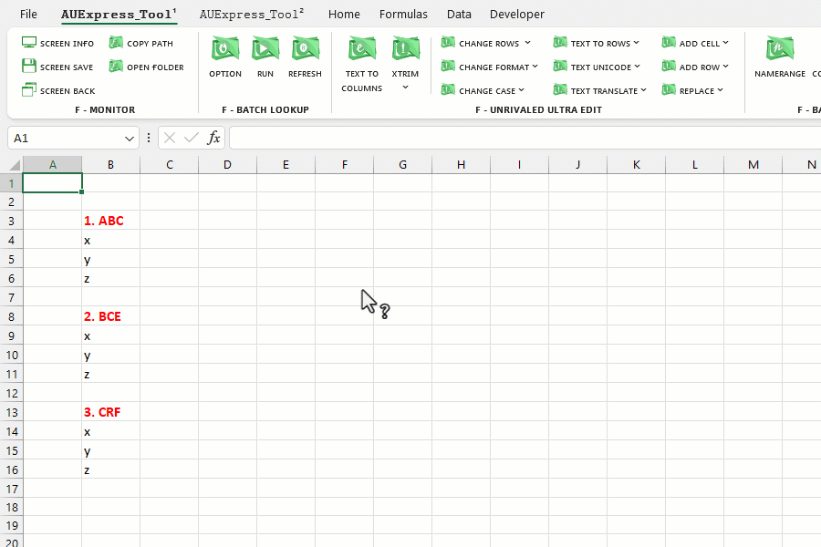
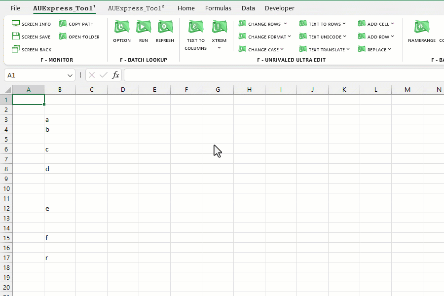
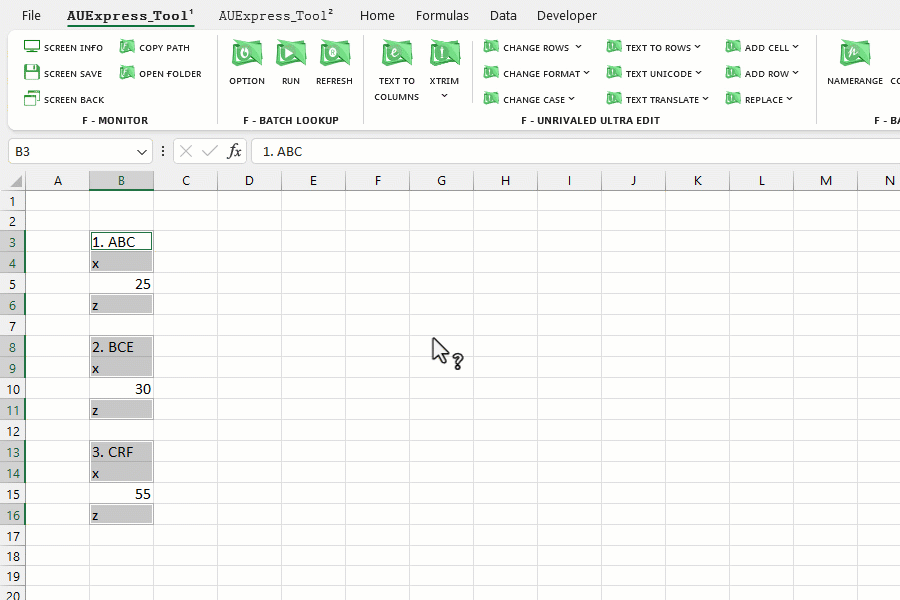
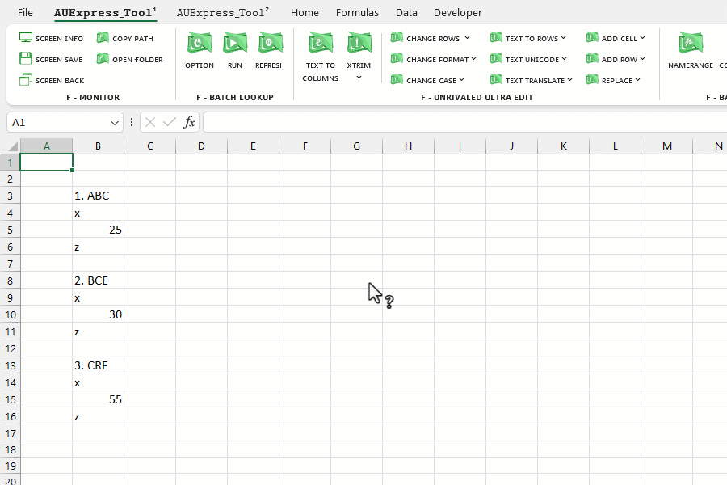
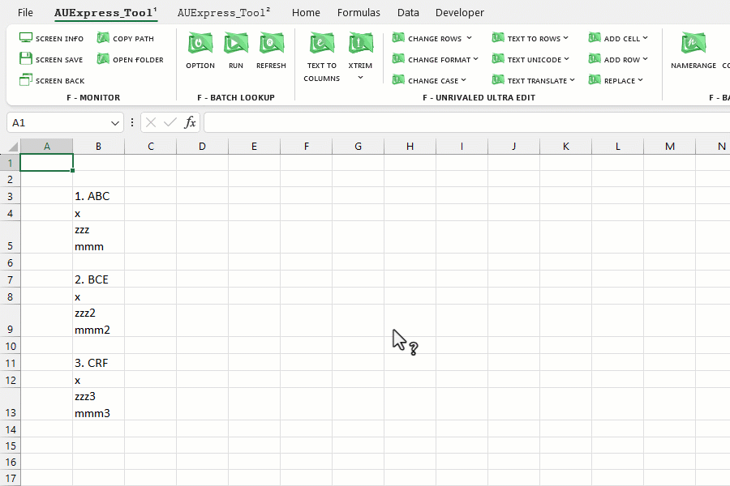
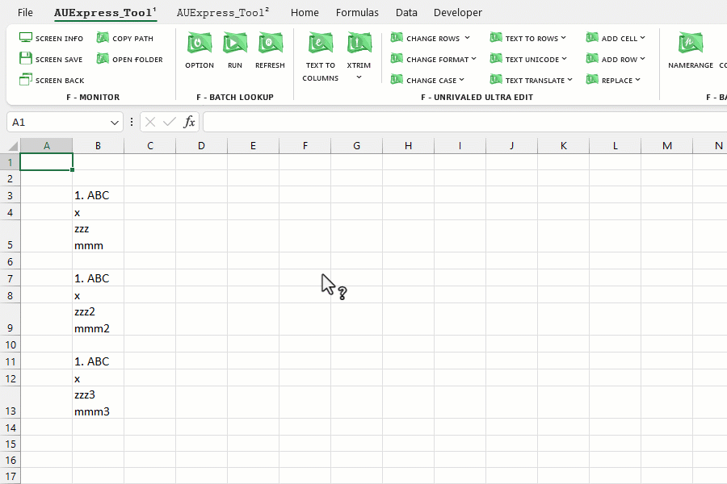
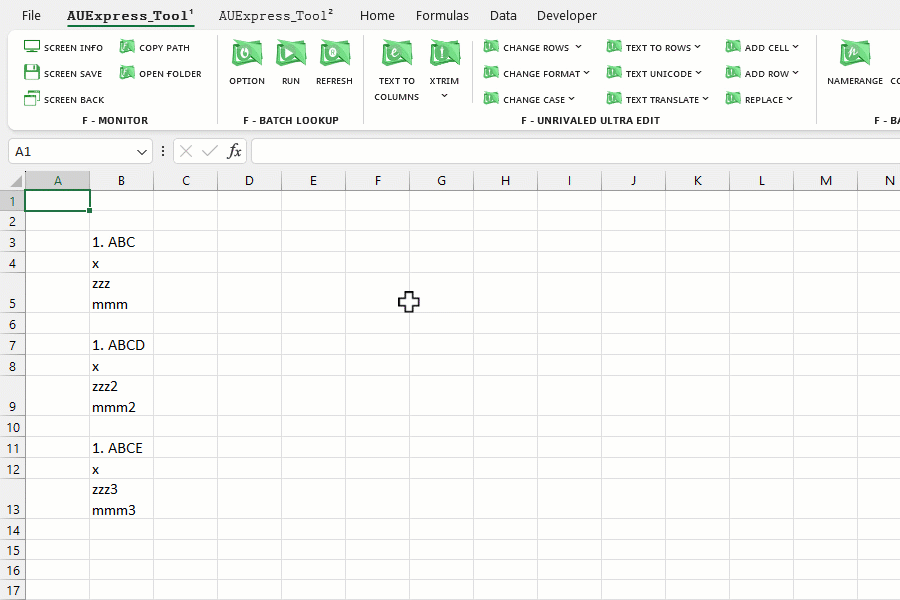

VD1: Chọn các ô có font màu đen, sau đó đổi màu font.
VD2: Chọn các ô trống (blank rows), sau đó ẩn các ô trống này.
VD3: Chọn các ô là số (value type = number), sau đó xóa tất cả chúng.
Chú ý: để xóa bạn cũng có thể chọn mục [Delete] rồi click [OK] thay vì dùng phím tắt Ctrl - để xóa dòng.
VD4: Chọn các ô là chuỗi văn bản (value type = text).
VD5: Chọn các ô có chiều cao (height) giống nhau.
VD6: Chọn các ô lặp lại giá trị (duplicate), dễ thấy "1. ABC", "x", "" đều xuất hiện trùng lặp.
VD7: Các trường hợp khác, bạn đọc tự tạo quy luật riêng (vd: Chọn các ô bắt đầu từ "1").
Học cách sử dụng các hàm chuỗi (LEFT, MID,..), các hàm Logic (AND, OR, ISBLANK, ISNUMBER,..) bạn sẽ làm chủ được tính năng này.
Related function
NUMBERTOWORDS (feature) Thiết lập phụ từ cho ứng dụng đọc số thành chữ (Ribbon).
FLOOKUP Nhập liệu nâng cao, hỗ trợ tra cứu (lọc) và xuất nhanh dữ liệu dựa trên từ khóa.
XGROUP Hàm mở rộng của GROUP. (hỗ trợ các hàm nâng cao).
Return to Home